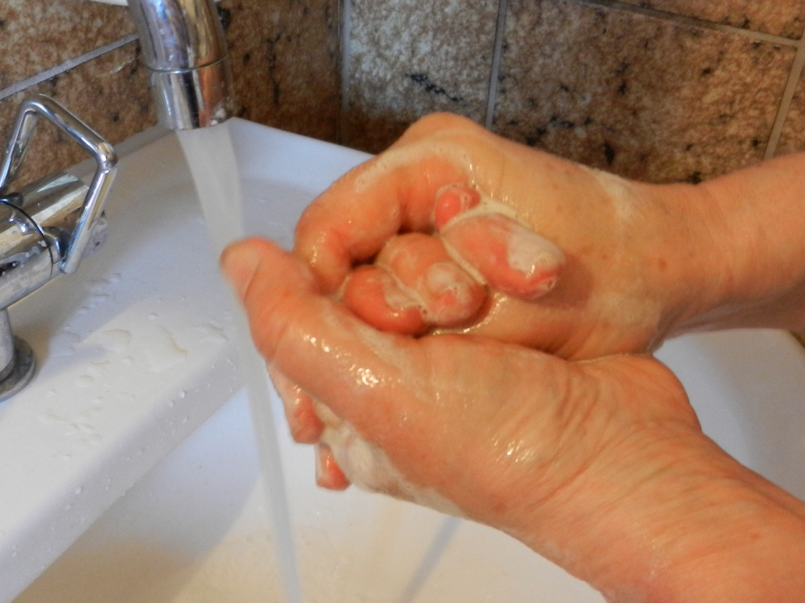

المملكة العربية السعودية — وزارة التعليم
كتاب العلوم — الجزء الأول من المقرر — طبعة ١٤٤٧ / ٢٠٢٥
العدوى وانتقالها
الصف الرابع الابتدائي
إعداد: نايف المطيري
موقع الدرس
أين نحن من الكتاب؟ ص ١٥٠
الوحدة الثالثة صحةُ الإنسانِ
الفصل الرابع الأمراضُ والعدوى
الدرس الثاني العدوى وانتقالُها
السؤالُ الأساسيُّ: كيفَ تنتقلُ الأمراضُ إلى أجسامِنا؟
أهداف التعلم
ماذا سأتعلَّمُ في هذا الدرسِ؟ أُعرِّفُ العدوى. أذكرُ نواقلَ المرضَ وأُعرِّفُ الناقلَ الحيويَّ. أَصِفُ طرقَ انتقالِ العدوى. أُعرِّفُ المناعةَ وأُبيِّنُ دورَ خلايا الدَّمِ البيضاءِ. أُفرِّقُ بينَ المناعةِ الطبيعيةِ والمناعةِ الاصطناعيةِ. أُوضِّحُ أهميةَ التطعيمِ. أُوظِّفُ مهارةَ الاستنتاجِ . تمهيد
لنبدأْ بسؤالٍ عطسَ شخصٌ قربَكَ منْ دونِ أنْ يغطِّيَ فمَهُ… ما الذي انتقلَ في الهواءِ؟
في هذا الدرسِ نتعرَّفُ كيفَ تنتقلُ العدوى، وكيفَ يحمي جسمُنا نفسَهُ.
معرفة سابقة
ما أعرفُهُ منْ قبلُ الأمراضُ المعديةُ تنتقلُ منَ المصابِ إلى السليمِ.
مسبِّباتُها فيروساتٌ · بكتيريا · فطرياتٌ.
جهازُ الدورانِ القلبُ والدَّمُ والأوعيةُ الدمويةُ.
المفردات
مفرداتُ الدرسِ ص ١٥٢
العدوى انتقالُ المرضِ منَ المخلوقِ الحيِّ المصابِ إلى المخلوقِ الحيِّ السليمِ.
الناقلُ الحيويُّ المخلوقاتُ الحيةُ الحاملةُ للمرضِ كالكلابِ والفئرانِ والطيورِ والبعوضِ والذبابِ.
المناعةُ قدرةُ الجسمِ على التصدِّي لمسبِّباتِ الأمراضِ.
خلايا الدَّمِ البيضاءُ الخلايا المسؤولةُ عنْ حمايةِ الجسمِ ومحاربةِ الأمراضِ والجراثيمِ.
التطعيمُ الحصولُ على الطُّعمِ لتكوينِ المناعةِ الطبيعيةِ ضدَّ الأمراضِ.
مهارةُ القراءةِ في هذا الدرسِ: الاستنتاجُ (أدلةٌ منَ النصِّ ← استنتاجات).
أستكشف — نشاط استقصائي
أحدِّدُ أكثرَ النواقلِ الحيويةِ خطورةً ص ١٥١ — نشاط الكتاب
الهدفُ: أيُّهما أشدُّ خطورةً الحيواناتُ الناقلةُ للمرضِ أمِ الحشراتُ الناقلةُ للمرضِ؟
أحتاجُ إلى:
مواقعَ إلكترونيةٍ موثوقةٍ ومصادرِ معلوماتٍ للبحثِ وجمعِ المعلوماتِ.
أستخدمُ الإنترنتَ بإشرافِ معلِّمي أوْ وليِّ أمري، وأعتمدُ المواقعَ الموثوقةَ فقط.
الخطواتُ:
أرسمُ جداولَ كما في الشكلِ المجاورِ. أتعاونُ معَ أفرادِ مجموعتي، وأبحثُ عنْ أكثرِ الحيواناتِ والحشراتِ الناقلةِ للمرضِ. أقارنُ. بينَ نتائجِ مجموعتي ونتائجِ المجموعاتِ الأخرى؟اسمُ الحيوانِ / الحشرةِ المرضُ المنقولُ ١ ٢ ٣ ٤
أستكشف — نشاط استقصائي
أستخلصُ النتائجَ ص ١٥١ — أسئلة الكتاب
٤. أفسِّرُ البياناتِ. أيُّهما أكثرُ نقلًا للمرضِ؟
إظهار الإجابة سؤال الكتاب — ص ١٥١ إجابةٌ نموذجيةٌ مقترحةٌ: تدلُّ نتائجُ البحثِ على أنَّ الحشراتِ أكثرُ نقلًا للمرضِ؛ لكثرةِ أعدادِها وسرعةِ انتشارِها ووصولِها إلى الطعامِ والإنسانِ مباشرةً — كالبعوضِ والذبابِ. وقدْ ذكرَ الكتابُ منَ النواقلِ الحيويةِ: الكلابَ والفئرانَ والطيورَ والبعوضَ والذبابَ. (تُقبلُ إجابةُ الطالبِ إذا دعمَها بالبياناتِ التي جمعَها.)
٥. استنتجْ. هلْ توقُّعُكَ صحيحًا؟
إظهار الإجابة سؤال الكتاب — ص ١٥١ إجابةٌ نموذجيةٌ مقترحةٌ: أقارنُ توقُّعي الأوَّلَ بالنتائجِ التي جمعتُها في الجدولينِ، ثمَّ أُبيِّنُ هلْ كانَ توقُّعي مطابقًا أمْ مختلفًا، وأذكرُ الدليلَ منَ المعلوماتِ التي وجدتُها.
أستكشفُ أكثرَ — أجرِّبُ. هلْ تتأثَّرُ نواقلُ المرضِ الحيويةُ، وقدرتُها على نقلِ الأمراضِ بظروفِ البيئةِ التي تعيشُ فيها؟ أضعُ خطةً؛ للتحقُّقِ منْ ذلكَ.
الشرح والتفسير
ما العدوى؟ ص ١٥٢
تُعرَّفُ العدوى بأنَّها انتقالُ المرضِ منَ المخلوقِ الحيِّ المصابِ إلى المخلوقِ الحيِّ السليمِ.
ويحدثُ الانتقالُ بصورٍ مختلفةٍ حسبَ نوعِ المسبِّبِ والمرضِ والبيئةِ التي يتكاثرُ فيها.
الشرح والتفسير
نواقلُ المرضِ ص ١٥٢
تنتقلُ الأمراضُ المعديةُ عنْ طريقِ الاتِّصالِ المباشرِ بالمخلوقِ الحيِّ المصابِ أوْ منْ خلالِ الماءِ أوِ الهواءِ أوِ الطعامِ أوِ استخدامِ الأدواتِ الملوَّثةِ أوِ الاتِّصالِ بالمخلوقاتِ الحيةِ الحاملةِ للمرضِ أوْ ما يُعرَفُ بالناقلِ الحيويِّ كالكلابِ والفئرانِ والطيورِ والبعوضِ والذبابِ.
الهواءُ الملوَّثُ ناقلٌ للأمراضِ.
المخلوقاتُ الحيةُ المصابةُ ناقلةٌ للأمراضِ.
الطعامُ والشرابُ المكشوفُ مُسبِّبٌ للأمراضِ.
الأدواتُ الملوَّثةُ استعمالُها ناقلٌ للأمراضِ.
الشرح والتفسير
طرقُ انتقالِ العدوى ص ١٥٣
الاتِّصالُ المباشرُ معَ المصابينَ بالعدوى أوِ الاتِّصالُ بالمخلوقاتِ الحيةِ المصابةِ، أوْ لمسُ أوِ استخدامُ الأدواتِ أوِ الأغراضِ المتَّسخةِ أوِ الملوَّثةِ.
السُّعالُ أوِ العطاسُ إذْ ينتقلُ الرَّذاذُ في الهواءِ لمسافاتٍ. وعندَما يسعُلُ أوْ يعطسُ الشخصُ المصابُ، يمكنُ أنْ تصلَ مُسبِّباتُ الأمراضِ إلى عينِ أوْ أنفِ أوْ فمِ الشخصِ المقابلِ وتُسبِّبُ لهُ العدوى.
الطعامُ والماءُ تناولُ الأطعمةِ المكشوفةِ أوْ شربُ المياهِ الملوَّثةِ بمُسبِّباتِ الأمراضِ. فذلكَ يؤدِّي إلى إصابةِ الجسمِ بالأمراضِ ورُبَّما الخطيرةِ منها.
أختبر نفسي
أسئلةُ الكتابِ ص ١٥٣
استنتجْ. كيفَ تُسهمُ النظافةُ في منعِ انتشارِ المرضِ؟
إظهار الإجابة سؤال الكتاب — ص ١٥٣ النظافةُ تزيلُ مُسبِّباتِ الأمراضِ منَ اليدينِ والأدواتِ والطعامِ قبلَ أنْ تصلَ إلى الجسمِ؛ فغسلُ اليدينِ يمنعُ انتقالَها منَ الأغراضِ المتَّسخةِ إلى الفمِ، وتنظيفُ الأدواتِ يمنعُ استعمالَ الأدواتِ الملوَّثةِ، وتغطيةُ الطعامِ تمنعُ وصولَ الحشراتِ الناقلةِ إليهِ. وبذلكَ تُقطعُ طرقُ انتقالِ العدوى.
التفكيرُ الناقدُ. لماذا يُنصحُ بأخذِ احتياطاتٍ أكثرَ عندَ ارتيادِ الأماكنِ المزدحمةِ؟
إظهار الإجابة سؤال الكتاب — ص ١٥٣ لأنَّ الأشخاصَ فيها يكونونَ قريبينَ بعضُهم منْ بعضٍ، فيزدادُ احتمالُ الاتِّصالِ المباشرِ ووصولِ رذاذِ السُّعالِ والعطاسِ إلى العينِ والأنفِ والفمِ، كما تكثرُ الأدواتُ والأسطحُ المشتركةُ التي قدْ تكونُ ملوَّثةً؛ فيزدادُ خطرُ انتقالِ العدوى.
سؤال تحقُّق
أُصنِّفُ طريقةَ انتقالِ العدوى ص ١٥٢ — ١٥٣
أقرأُ الموقفَ، ثمَّ أختارُ طريقةَ انتقالِ العدوى.
— —
اتِّصالٌ مباشرٌ وأدواتٌ رذاذُ السُّعالِ والعطاسِ طعامٌ وماءٌ
أبدأُ التصنيفَ.
النتيجة: ٠ / ٠
إعادةُ النشاطِ
الشرح والتفسير
كيفَ نحمي أنفسَنا منَ الأمراضِ؟ ص ١٥٤
لحمايةِ أجسامِنا منَ الأمراضِ لا بدَّ منْ تقويةِ مناعتِها.
المناعةُ: هيَ قدرةُ الجسمِ على التصدِّي لمُسبِّباتِ الأمراضِ. والمناعةُ إمَّا أنْ تكونَ طبيعيةً أوْ مناعةً اصطناعيةً.
فالجهازُ المناعيُّ في أجسامِنا يستطيعُ التعرُّفَ على أعدادٍ لا تُحصى منَ المُسبِّباتِ.
الشرح والتفسير
خلايا الدَّمِ البيضاءُ ص ١٥٤
تقومُ خلايا الدَّمِ البيضاءُ بمهاجمةِ المُسبِّباتِ والقضاءِ عليها، وتُعدُّ خلايا الدَّمِ البيضاءُ هيَ الخلايا المسؤولةُ عنْ حمايةِ الجسمِ ومحاربةِ الأمراضِ والجراثيمِ داخلَ أجسامِنا، ويحتوي جهازُ الدورانِ على خلايا الدَّمِ البيضاءِ التي تتجوَّلُ باستمرارٍ في الجسمِ بحثًا عنْ مُسبِّباتِ الأمراضِ لمحاربتِها.
خطُّ الدفاعِ الأوَّلِ يُعدُّ الجلدُ خطَّ الدفاعِ الأوَّلَ عنِ الجسمِ.
الإفرازاتُ المختلفةُ الدَّمعُ · مُخاطُ الأنفِ · شمعُ الأذنِ · اللُّعابُ · العُصارةُ المعديةُ.
ويمكنُ تقويةُ مناعتِنا باتِّباعِ العاداتِ الصحيةِ للمحافظةِ على صحةِ أجسامِنا.
الشرح والتفسير
المناعةُ الطبيعيةُ والمناعةُ الاصطناعيةُ ص ١٥٥
المناعةُ الطبيعيةُ تتمثَّلُ في استجابةٍ مناعيةٍ سريعةٍ تقومُ بإنتاجِ الأجسامِ المُضادَّةِ التي تُساهمُ في محاربةِ مُسبِّباتِ الأمراضِ. وتدومُ المناعةُ الطبيعيةُ طويلًا لذلكَ تجدُ أنَّكَ لا تُصابُ بأمراضٍ مُعيَّنةٍ أكثرَ منْ مرَّةٍ كجُدري الماءِ.
المناعةُ الاصطناعيةُ تتكوَّنُ عنْ طريقِ التطعيمِ وأخذِ اللقاحاتِ، وهذهِ المناعةُ قدْ تدومُ مدةً قصيرةً فيحتاجُ الإنسانُ إلى أخذِ اللِّقاحِ أكثرَ منْ مرةٍ، وقدْ تدومُ مدةً طويلةً وقدْ يبقى بعضُها مدى الحياةِ.
الجُدري المائي مرضٌ فيروسيٌّ، منْ أعراضِهِ حُمَّى شديدةٌ وطفحٌ جلديٌّ يتكوَّنُ منْ بقعٍ حمراءَ أوْ بثورٍ.
أختبر نفسي
أسئلةُ الكتابِ ص ١٥٥
استنتجْ. ما الفرقُ بينَ المناعةِ الطبيعيةِ والمناعةِ الاصطناعيةِ؟
إظهار الإجابة سؤال الكتاب — ص ١٥٥ المناعةُ الطبيعيةُ استجابةٌ مناعيةٌ سريعةٌ يُنتجُ فيها الجسمُ الأجسامَ المُضادَّةَ بنفسِهِ، وتدومُ طويلًا فلا يُصابُ الإنسانُ بالمرضِ نفسِهِ أكثرَ منْ مرَّةٍ — كجُدري الماءِ.
التفكيرُ الناقدُ. لماذا منَ الضروريِّ أنْ يُكملَ الطفلُ جميعَ جُرعاتِ التطعيمِ المُقرَّرةِ منْ وزارةِ الصحةِ؟
إظهار الإجابة سؤال الكتاب — ص ١٥٥ لأنَّ المناعةَ الاصطناعيةَ قدْ تدومُ مدةً قصيرةً، فيحتاجُ الإنسانُ إلى أخذِ اللِّقاحِ أكثرَ منْ مرةٍ حتى يتكوَّنَ لديهِ ما يكفي منَ الأجسامِ المُضادَّةِ وتستمرَّ الحمايةُ. فإذا لمْ تكتملِ الجُرعاتُ ضعُفتِ المناعةُ وبقيَ الطفلُ معرَّضًا للإصابةِ بالمرضِ.
الشرح والتفسير
التطعيمُ ص ١٥٦
التطعيمُ: الطريقةُ الأخرى لتكوينِ المناعةِ الطبيعيةِ ضدَّ الأمراضِ هيَ الحصولُ على الطُّعمِ، ويمكنُ الحصولُ عليهِ بالحَقنِ أوْ تناولِ اللقاحِ عنْ طريقِ الفمِ. ويتكوَّنُ الطُّعمُ منْ أجسامٍ تمنحُكَ مناعةً طبيعيةً ضدَّ مرضٍ مُعيَّنٍ.
يعملُ التطعيمُ على تكوينِ المناعةِ ضدَّ الأمراضِ.
الرابطُ معَ رؤيةِ ٢٠٣٠: منْ أهدافِ الرؤيةِ: ٢.١.٣ تعزيزُ الوقايةِ ضدَّ المخاطرِ الصحيةِ (نظامُ الصحةِ العامةِ وإدارةِ الأزماتِ).
أختبر نفسي
أسئلةُ الكتابِ ص ١٥٦
استنتجْ. كيفَ يُساعدُ التطعيمُ على حمايةِ جسمِ الإنسانِ؟
إظهار الإجابة سؤال الكتاب — ص ١٥٦ الطُّعمُ يتكوَّنُ منْ أجسامٍ تمنحُ الجسمَ مناعةً طبيعيةً ضدَّ مرضٍ مُعيَّنٍ؛ فيتعرَّفُ الجهازُ المناعيُّ على مُسبِّبِ المرضِ ويُنتجُ الأجسامَ المُضادَّةَ قبلَ الإصابةِ. فإذا دخلَ المُسبِّبُ الجسمَ فيما بعدُ، تصدَّتْ لهُ خلايا الدَّمِ البيضاءُ سريعًا فلا يُصابُ الإنسانُ بالمرضِ أوْ تخفُّ شدَّتُهُ.
التفكيرُ الناقدُ. للعديدِ منَ الأمراضِ أعراضٌ تُشبهُ أعراضَ الأنفلونزا. فلماذا لا يكونُ لقاحُ الأنفلونزا فعَّالًا ضدَّ الإصابةِ بهذهِ الأمراضِ؟
إظهار الإجابة سؤال الكتاب — ص ١٥٦ لأنَّ الطُّعمَ يمنحُ مناعةً طبيعيةً ضدَّ مرضٍ مُعيَّنٍ فقط؛ فأجسامُهُ المُضادَّةُ مصمَّمةٌ للتعرُّفِ على مُسبِّبِ الأنفلونزا وحدَهُ. وتشابهُ الأعراضِ لا يعني تشابهَ المُسبِّبِ؛ فقدْ يكونُ فيروسًا آخرَ أوْ بكتيريا أوْ فطرياتٍ، فلا يتعرَّفُ عليهِ الجهازُ المناعيُّ منْ خلالِ لقاحِ الأنفلونزا.
ملخص مصور
ملخصُ الدرسِ ص ١٥٧
١ تنتقلُ الأمراضُ منَ الجسمِ المصابِ إلى الجسمِ السليمِ بواسطةِ نواقلِ المرضِ المختلفةِ.
٢ وينتقلُ مسبِّبُ المرضِ بعدةِ طرقٍ ومنها: تناولُ الأطعمةِ المكشوفةِ، ولمسُ الأجسامِ المتَّسخةِ، والعطاسُ والسُّعالُ في اليدِ.
٣ وظيفةُ الخلايا البيضاءِ: هيَ مقاومةُ الأمراضِ التي يصابُ بها الجسمُ وحمايتُهُ منها.
المطويات — أنظِّمُ أفكاري: أعملُ مطويةً ألخِّصُ فيها ما تعلَّمتُهُ عنْ: (العدوى) — (انتقالِها) — (مكافحتِها).
خريطة المفاهيم
أنظِّمُ مفاهيمَ الدرسِ العدوى وانتقالُها
نواقلُ المرضِ
ماءٌ · هواءٌ · طعامٌ أدواتٌ ملوَّثةٌ ناقلٌ حيويٌّ: كلابٌ · فئرانٌ · طيورٌ · بعوضٌ · ذبابٌ
طرقُ الانتقالِ
اتِّصالٌ مباشرٌ سُعالٌ وعطاسٌ طعامٌ وماءٌ ملوَّثانِ
دفاعاتُ الجسمِ
الجلدُ الإفرازاتُ خلايا الدَّمِ البيضاءُ
المناعةُ
طبيعيةٌ اصطناعيةٌ بالتطعيمِ
مراجعة الدرس
أفكِّرُ وأتحدَّثُ وأكتبُ ص ١٥٧ — أسئلة الكتاب
١. المفرداتُ. ما المقصودُ بنواقلِ المرضِ؟
إظهار الإجابة سؤال الكتاب — ص ١٥٧ نواقلُ المرضِ هيَ الوسائلُ التي ينتقلُ بها المرضُ منَ المصابِ إلى السليمِ، وتشملُ: الماءَ والهواءَ والطعامَ والأدواتِ الملوَّثةَ، والمخلوقاتِ الحيةَ الحاملةَ للمرضِ أوْ ما يُعرَفُ بالناقلِ الحيويِّ كالكلابِ والفئرانِ والطيورِ والبعوضِ والذبابِ.
٢. استنتجْ. ما الذي يحدثُ إذا تناولتَ طعامَكَ ويدُكَ مُتَّسخةٌ؟
إظهار الإجابة سؤال الكتاب — ص ١٥٧ تنتقلُ مُسبِّباتُ الأمراضِ العالقةُ باليدِ إلى الطعامِ ثمَّ إلى الفمِ فتدخلُ الجسمَ، فيُصابُ الإنسانُ بالعدوى وقدْ تظهرُ عليهِ أعراضٌ كالإسهالِ والقيءِ وألمِ البطنِ. ولذلكَ يجبُ غسلُ اليدينِ قبلَ الطعامِ.
٣. التفكيرُ الناقدُ. لا يُصابُ الإنسانُ بالجُدري المائيِّ إلَّا مرةً واحدةً في حياتِهِ. أفسِّرُ إجابتي.
إظهار الإجابة سؤال الكتاب — ص ١٥٧ لأنَّ الجسمَ يكوِّنُ بعدَ الإصابةِ الأولى مناعةً طبيعيةً ؛ إذْ يُنتجُ أجسامًا مُضادَّةً تُساهمُ في محاربةِ مُسبِّبِ المرضِ، وتدومُ هذهِ المناعةُ طويلًا. فإذا دخلَ المُسبِّبُ نفسُهُ مرةً أخرى تصدَّى لهُ الجهازُ المناعيُّ سريعًا فلا يمرضُ الإنسانُ مرةً ثانيةً.
مراجعة الدرس
أختارُ الإجابةَ الصحيحةَ · السؤالُ الأساسيُّ ص ١٥٧ — أسئلة الكتاب
٤. أختارُ الإجابةَ الصحيحةَ. ما الخلايا التي تهاجمُ مسبِّباتِ المرضِ؟
إظهار الإجابة سؤال الكتاب — ص ١٥٧ ب - خلايا الدَّمِ البيضاءُ ؛ فهيَ الخلايا المسؤولةُ عنْ حمايةِ الجسمِ ومحاربةِ الأمراضِ والجراثيمِ.
٥. السؤالُ الأساسيُّ. كيفَ تنتقلُ الأمراضُ إلى أجسامِنا؟
إظهار الإجابة سؤال الكتاب — ص ١٥٧ تنتقلُ الأمراضُ بالعدوى منَ المخلوقِ الحيِّ المصابِ إلى السليمِ عبرَ: الاتِّصالِ المباشرِ ولمسِ الأدواتِ المتَّسخةِ أوِ الملوَّثةِ، ورذاذِ السُّعالِ والعطاسِ الذي ينتقلُ في الهواءِ فيصلُ إلى العينِ أوِ الأنفِ أوِ الفمِ، وتناولِ الأطعمةِ المكشوفةِ أوْ شربِ المياهِ الملوَّثةِ، وعنْ طريقِ النواقلِ الحيويةِ كالبعوضِ والذبابِ والفئرانِ.
مراجعة الدرس
العلومُ والكتابةُ · العلومُ والفنُّ ص ١٥٧ — أسئلة الكتاب
العلومُ والكتابةُ. أكتبُ مقالًا عنْ أفضلِ الوسائلِ التي تُساعدُكَ على تقويةِ مناعةِ جسمِكَ منْ مسبِّباتِ الأمراضِ.
إظهار الإجابة سؤال الكتاب — ص ١٥٧ إجابةٌ نموذجيةٌ مقترحةٌ: يمكنُ تقويةُ المناعةِ باتِّباعِ العاداتِ الصحيةِ للمحافظةِ على صحةِ الجسمِ: تناولُ الطعامِ الصحيِّ المتوازنِ، والنومُ الكافي، وممارسةُ الرياضةِ، وشربُ الماءِ النظيفِ، والاهتمامُ بالنظافةِ الشخصيةِ وغسلُ اليدينِ بانتظامٍ. ويُضافُ إلى ذلكَ التطعيمُ وأخذُ اللقاحاتِ المقرَّرةِ؛ لأنَّهُ يمنحُ الجسمَ مناعةً ضدَّ أمراضٍ مُعيَّنةٍ.
العلومُ والفنُّ. أرسمُ كيفَ تقومُ خليةُ الدَّمِ البيضاءِ بمهاجمةِ مسبِّباتِ الأمراضِ في أجسامِنا.
إظهار الإجابة سؤال الكتاب — ص ١٥٧ إجابةٌ نموذجيةٌ مقترحةٌ للرسمِ: أرسمُ وعاءً دمويًّا فيهِ خلايا دمٍ حمراءُ وخليةُ دمٍ بيضاءُ. ثمَّ أرسمُ ثلاثَ مراحلَ: (١) الخليةُ البيضاءُ تتجوَّلُ في الدَّمِ بحثًا عنِ المُسبِّبِ، (٢) تقتربُ منَ المُسبِّبِ وتحيطُ بهِ، (٣) تبتلعُهُ وتقضي عليهِ. وأكتبُ تحتَ الرسمِ: «خلايا الدَّمِ البيضاءُ مسؤولةٌ عنْ حمايةِ الجسمِ ومحاربةِ الأمراضِ والجراثيمِ».
تقويم ختامي
أسئلةٌ تدريبيةٌ إضافيةٌ (منْ إعدادِ المعلمِ) انتقالُ المرضِ منَ المخلوقِ المصابِ إلى السليمِ يسمَّى:
المناعةَ العدوى التطعيمَ الأعراضَ
منَ النواقلِ الحيويةِ للمرضِ:
البعوضُ والذبابُ الماءُ الهواءُ الأدواتُ
خطُّ الدفاعِ الأوَّلُ عنِ الجسمِ هوَ:
القلبُ الجلدُ الرِّئتانِ المعدةُ
تقويم ختامي
أسئلةٌ تدريبيةٌ إضافيةٌ (منْ إعدادِ المعلمِ) قدرةُ الجسمِ على التصدِّي لمُسبِّباتِ الأمراضِ تسمَّى:
العدوى المناعةَ الأعراضَ الحساسيةَ
المناعةُ التي تتكوَّنُ عنْ طريقِ التطعيمِ وأخذِ اللقاحاتِ هيَ:
الطبيعيةُ الاصطناعيةُ المؤقَّتةُ فقط لا شيءَ ممَّا سبقَ
منْ إفرازاتِ الجسمِ التي تحميهِ:
الدَّمعُ ومُخاطُ الأنفِ واللُّعابُ خلايا الدَّمِ الحمراءُ الصفائحُ الدمويةُ العظامُ
بطاقة خروج
قبلَ أنْ نُنهيَ الدرسَ أذكرُ طريقتينِ لانتقالِ العدوى. ما وظيفةُ خلايا الدَّمِ البيضاءِ؟ أُفرِّقُ بجملةٍ واحدةٍ بينَ المناعةِ الطبيعيةِ والاصطناعيةِ. الفكرةُ الرئيسةُ: تنتقلُ العدوى بطرقٍ مختلفةٍ، ويحمي الجسمَ منها الجلدُ والإفرازاتُ وخلايا الدَّمِ البيضاءُ والتطعيمُ.
إثراء اختياري
محاكاة: كيف تنتقل العدوى؟ إثراء اختياري مصدر العدوى مصدر العدوى ١ طريقة الانتقال طريقة الانتقال ٢ الدخول إلى الجسم الدخول إلى الجسم ٣ الوقاية الوقاية ٤ سلسلةُ انتقال العدوى — وكيف نقطعها.
مصدر العدوى طريقة الانتقال الدخول إلى الجسم الوقاية
اضغط على أيِّ عنصرٍ في الرسم، أو تابع الخطوات بالترتيب.
◀ السابق التالي ▶
إثراء اختياري
هل تعلم؟ — اكسر السلسلة إثراء اختياري ١
لكي تحدث العدوى لا بدَّ من اكتمال سلسلة ؛ فإذا قطعتَ حلقةً واحدةً منها توقَّف المرض.
٢
العطسة الواحدة تنشر رذاذًا يحمل ميكروباتٍ إلى مسافةٍ أبعد ممَّا تتخيَّل؛ لذا نغطِّي الفم والأنف.
٣
الصابون لا يقتل الميكروبات فحسب، بل يفكِّها عن الجلد فيجرفها الماء بعيدًا.
قطعُ حلقةٍ واحدةٍ يوقف انتقال المرض.
إثراء اختياري
بطاقات المفردات — اقلبها! إثراء اختياري العدوى اضغط لترى المعنى
انتقالُ المرضِ منَ المخلوقِ الحيِّ المصابِ إلى المخلوقِ الحيِّ السليمِ.
الناقلُ الحيويُّ اضغط لترى المعنى
المخلوقاتُ الحيةُ الحاملةُ للمرضِ كالكلابِ والفئرانِ والطيورِ والبعوضِ والذبابِ.
المناعةُ اضغط لترى المعنى
قدرةُ الجسمِ على التصدِّي لمسبِّباتِ الأمراضِ.
خلايا الدَّمِ البيضاءُ اضغط لترى المعنى
الخلايا المسؤولةُ عنْ حمايةِ الجسمِ ومحاربةِ الأمراضِ والجراثيمِ.
التطعيمُ اضغط لترى المعنى
الحصولُ على الطُّعمِ لتكوينِ المناعةِ الطبيعيةِ ضدَّ الأمراضِ.
إظهار كل المعاني
اضغط على البطاقة لترى المعنى.
إثراء اختياري
لعبة: رتِّب سلسلة العدوى إثراء اختياري ظهور المرض طريقة الانتقال مصدر العدوى دخول الجسم
↻ إعادة الترتيب
رتِّب سلسلة انتقال العدوى.
إثراء اختياري
العلوم في حياتي إثراء اختياري طبِّق الآن اغسل يديك عشرين ثانيةً مع تنظيف ما بين الأصابع وتحت الأظافر، وعلِّم زميلًا الطريقة.
سؤال تفكير أيُّ حلقةٍ في سلسلة العدوى أسهل أن نقطعها في المدرسة؟ ولماذا؟
🔎 إثراء مصوّر
عدسة العلوم ألاحظ · أتساءل · أفسّر
كيف يمكن أن يقطع غسل اليدين أحد مسارات انتقال الجراثيم؟

🔍 تكبير الصورة غسل اليدين بالماء والصابون من عادات النظافة اليومية. الصورة: Beat Ruest · مصدر الصورة · CC BY-SA 4.0 · الصورة الأصلية دون تعديل
👁️ قد تنتقل بعض الجراثيم من سطح ملوث إلى اليد، ثم إلى الفم أو الأنف أو العينين.
💡 يساعد الصابون والفرك والشطف على إزالة الأوساخ والجراثيم من اليدين وتقليل انتقالها.
🧼 توصي إرشادات غسل اليدين بفركهما بالصابون عشرين ثانية على الأقل، مع تنظيف ظهر اليدين وبين الأصابع.
مراجع الإثراء للمعلم
🧩 رسم تفاعلي
مسار يمكن قطعه أربط الأفكار
اضغط عناصر الرسم لاكتشاف معناها والعلاقة بينها.
1 🚪 سطح ملوث ← 2 ✋ يد تلامس السطح ← 3 🧼 غسل وفرك وشطف ← 4 👐 يدان أنظف
هذا مسار واحد للانتقال؛ غسل اليدين لا يمنع وحده كل أنواع العدوى أو جميع طرقها.
🚪 سطح ملوث قد يحمل بعض الجراثيم
🧪 مختبر الاستكشاف
غسل افتراضي لليدين أتوقّع · أجرّب · أقارن
كيف نقارن بقايا التلوث إذا بدأنا بمستوى واحد واختلفت طريقة تنظيف اليدين؟
طريقة التنظيف في النموذج
دون غسل شطف بالماء فقط غسل بالصابون والفرك والشطف
▶ شغّل المحاكاة ↺ إعادة
الأعداد ليست نسب تعقيم أو أعداد ميكروبات؛ لا تُستخدم عينات حقيقية، ولا يتنبأ النموذج بإصابة شخص.
مؤشر تصوري لبقايا التلوث بعد طريقة التنظيف
🟣 🟣 🟣 🟣 🟣 🟣 🟣 🟣 🟣 🟣
بقايا أكثر
رموز كثيرة تمثل بقايا التلوث.
لم نطبق خطوة تنظيف؛ يبقى مؤشر التلوث مرتفعًا في هذا النموذج البسيط.
توقّع النتيجة، ثم غيّر الحالة وشغّل المحاكاة.
🤔 لماذا لا نكتب صفر جراثيم بعد الغسل الجيد؟
انْتَهَى الدَّرْسُ إعداد: نايف المطيري
العلوم — الصف الرابع الابتدائي — الجزء الأول من المقرر
↺ البداية
▶ السابق
التالي ◀
إظهار كل الإجابات
⛶ ملء الشاشة
إعداد: نايف المطيري